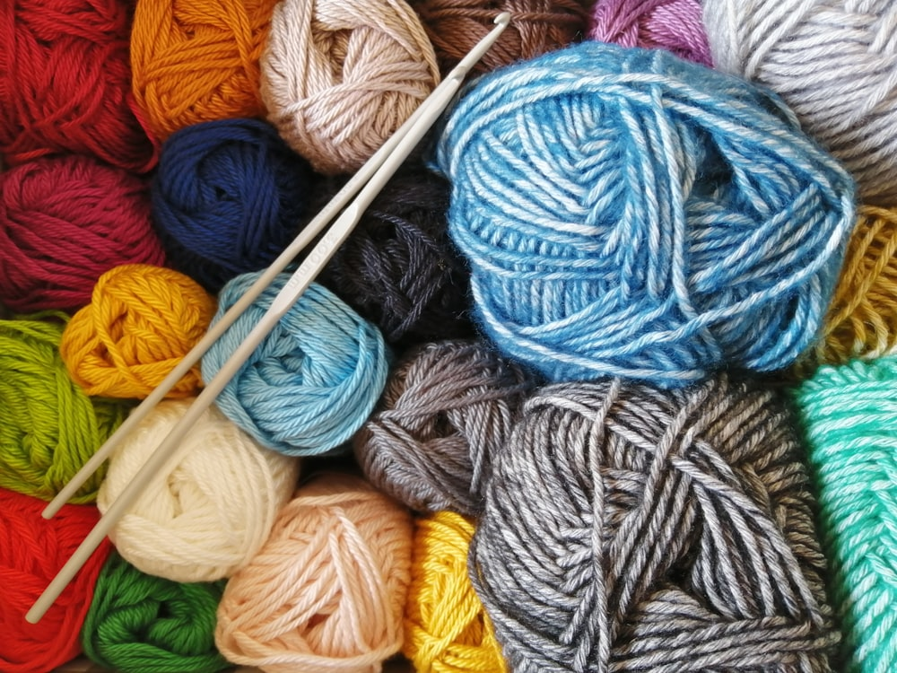
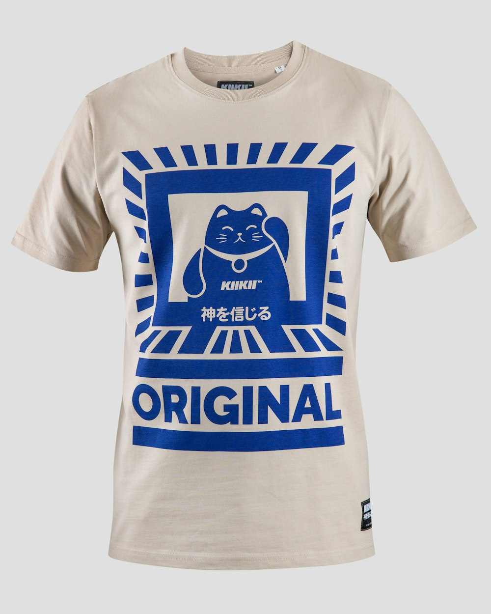

Organic Cotton vs. Bamboo vs. Silk: The Comprehensive Guide to Sustainable Daily Sock Textiles

When selecting everyday socks for professional dress, casual wear, or leisure, consumers are confronted with a dizzying array of material claims. From organic combed cotton and bamboo-derived cellulose to luxurious filament silk, each natural fiber offers a distinct profile of tactile softness, moisture handling, tensile strength, and environmental impact. Navigating these textile choices requires looking past marketing buzzwords into the physical chemistry and manufacturing realities of botanical and protein fibers.
The Long-Staple Difference
The durability and surface smoothness of cotton and natural yarns depend on fiber staple length. Extra-Long Staple (ELS) fibers measuring over 35 mm in length produce smooth, continuous threads with 80% fewer exposed fiber ends than short-staple commodity cotton.
1. GOTS-Certified Organic Combed Cotton: The Everyday Standard
Cotton (Gossypium) has been the cornerstone of daily footwear for generations due to its natural breathability, hypoallergenic purity, and familiar comfort. However, not all cotton is engineered equally.
Conventional commodity cotton uses short-staple fibers treated with synthetic chemical defoliants, pesticide residues, and harsh chlorine bleaching agents. In contrast, Global Organic Textile Standard (GOTS) certified cotton is cultivated using non-GMO seeds and organic farming practices that use up to 91% less blue water through rainwater harvesting and crop rotation.
The Combing Process: Before spinning, raw organic cotton fibers undergo mechanical combing. Fine wire brushes align long fibers in parallel while extracting short, brittle fibers and foreign seeds. The resulting combed yarn exhibits:
- Exceptional Tensile Resilience: Combed cotton resists abrasion across the heel and ball of the foot significantly longer than carded yarns.
- Superior Softness: Eliminating short protruding fibers prevents surface fuzz and lint accumulation over repeated wash cycles.
- Hypoallergenic Comfort: Free from toxic heavy metal dye mordants and formaldehydes, protecting sensitive skin from contact irritation.
- Enhanced Color Fastness: Long-staple fibers absorb reactive botanical dyes deeply into their crystalline cellulose matrix, preventing premature color fading.

Figure 4.1: Long-staple GOTS organic combed cotton provides breathable all-day comfort for sensitive skin.2. Bamboo Viscose vs. Closed-Loop Bamboo Lyocell
Bamboo fiber is celebrated for its silky drape, cool-to-the-touch sensation, and natural moisture absorption. However, textile engineers must distinguish between common bamboo viscose and advanced closed-loop bamboo lyocell.
Traditional bamboo viscose requires dissolving raw bamboo stalks in toxic solvents (such as carbon disulfide and sodium hydroxide) in open systems that can release hazardous effluents if poorly regulated. In contrast, modern eco-conscious manufacturing employs the Lyocell process:
- Non-Toxic Solvent Dissolution: Raw bamboo cellulose is dissolved using N-Methylmorpholine N-oxide (NMMO), an organic, non-hazardous solvent.
- 99.5% Closed-Loop Recovery: Over 99.5% of the solvent and processing water is continuously captured, purified, and recycled within a closed manufacturing cycle.
- Micro-Porosity Structure: The resulting lyocell fiber features natural microscopic sub-channels that wick moisture 40% faster than standard cotton, providing a luxurious cooling sensation.
- Cellulose Purity: Lyocell processes yield an exceptionally clean, uniform filament that retains full mechanical strength even under repeated laundering.
| Fiber Characteristic | GOTS Organic Combed Cotton | Closed-Loop Bamboo Lyocell | Mulberry Filament Silk |
|---|---|---|---|
| Primary Fiber Origin | Seed hair (Botanical Cellulose) | Regenerated Wood (Bamboo Cellulose) | Continuous Cocoon Protein (Fibroin) |
| Wet Tensile Strength | High (Gains strength when wet) | Moderate (Softens when wet) | High (Delicate shear resistance) |
| Tactile Sensation | Crisp, breathable, structured | Silky, fluid, thermally cool | Ultra-smooth, luxurious, weightless |
| Moisture Absorption Rate | 7% – 8.5% | 11% – 13% | 11% – 12% |
3. Mulberry Silk: The Pinnacle of Executive Luxury Hosiery
Silk is nature's strongest continuous filament protein, cultivated from the cocoons of Bombyx mori silkworms fed exclusively on white mulberry leaves. Composed primarily of fibroin surrounded by a water-soluble sericin protein binder, silk offers unmatched mechanical elegance.
In high-gauge luxury dress hosiery (such as 200-needle executive dress socks), silk delivers several structural advantages:
- Prismatic Optical Lustre: The triangular cross-section of silk filaments refracts ambient light at diverse angles, producing a refined natural sheen that synthetics cannot duplicate.
- Weightless Thermal Buffering: Despite having a gossamer-thin profile that fits effortlessly inside narrow handcrafted leather dress shoes, silk maintains excellent natural insulation.
- Microscopic Smoothness: With zero surface scales or rough grain, silk slides with near-zero friction against delicate dress shoe linings.
- Amino Acid Biocompatibility: Silk fibroin contains eighteen skin-friendly amino acids that closely mirror the protein structure of human skin, minimizing tactile irritation.

Figure 4.2: Sustainable zero-plastic packaging and co-spinning long-staple organic fibers ensures durable luxury.4. Blended Fiber Engineering: Achieving the Optimal Synergy
While 100% single-fiber garments are conceptually appealing, pure natural fibers face mechanical constraints in dynamic footwear applications. 100% pure silk lacks longitudinal elasticity; 100% pure bamboo loses tensile strength when wet; and 100% pure cotton can stretch out without snapping back.
The pinnacle of modern hosiery design lies in Intimate Core Blending. At SockEssentials, our signature everyday socks blend:
- 76% GOTS Organic Combed Cotton: Provides structured botanical breathability, softness, and moisture absorption against the skin.
- 20% High-Tenacity Recycled Polyamide: Concentrated at the heel pocket and toe box to absorb friction and extend garment lifespan by 300%.
- 4% Double-Covered Elastane: Inlaid throughout the foot arch and calf band to deliver secure non-slip retention without constriction.
5. Life Cycle Analysis and Environmental Footprint
Evaluating sustainability requires analyzing a garment's full journey from farm to end-of-life disposal:
- Agricultural Inputs: Organic cotton eliminates synthetic nitrates and chemical sprays, protecting agricultural groundwater tables and local biodiversity.
- Dyehouse Chemistry: OEKO-TEX Standard 100 certified low-impact reactive dyes bind chemically to cellulose fibers at lower water temperatures, producing zero toxic wastewater runoff.
- Garment Longevity: The most sustainable sock is the one that lasts for years. By engineering reinforced friction points, SockEssentials socks divert textile waste from municipal landfills.
- Post-Consumer Biodegradability: The natural fiber components of our socks break down cleanly in commercial compost facilities without leaving microplastic residues.
6. Yarn Count and Gauge Selection in Daily Hosiery
The fineness of spun yarn is quantified using the English Cotton Count ($Ne$) or Metric Count ($Nm$). Higher numbers represent finer, lighter yarns. In luxury sock manufacturing, choosing the right yarn count determines whether a sock feels like a structured cushion or a whisper-light second skin.
For instance, casual weekend socks often use $Ne\ 24/1$ single-ply combed yarns, which provide a substantial hand feel and rugged durability. In contrast, executive dress socks utilize two-ply $Ne\ 60/2$ double-twisted yarns. Two-ply twisting locks opposing yarn twists together, producing exceptional dimensional stability that resists fabric spiraling and torquing in the wash.
7. Frequently Asked Questions on Sustainable Sock Fibers
What is the difference between combed cotton and regular carded cotton?
Combed cotton undergoes an extra mechanical brushing process that eliminates short, brittle fibers, aligning only long, uniform fibers. This results in a much stronger, softer yarn that does not fuzz or shed after washing.
Why is bamboo lyocell better than conventional bamboo viscose?
Bamboo lyocell uses an organic, non-toxic solvent in a 99.5% closed-loop recovery system, whereas traditional viscose uses harsh chemical baths that can pollute surrounding waterways if unmanaged.
How should I wash silk-blend luxury socks?
Hand wash or machine wash on a delicate cold cycle with a silk-safe pH-neutral detergent, and lay flat to dry in the shade to preserve delicate fibroin protein chains.
Why do premium socks use two-ply ($Ne\ 60/2$) yarn?
Two-ply yarns twist two ultra-fine filaments together in opposite directions. This neutralizes internal torsional torque, ensuring socks do not twist or warp along the leg seam after laundering.
Key Scientific Takeaways
- GOTS organic combed cotton uses extra-long staple fibers to maximize durability and eliminate short-fiber fuzz.
- Closed-loop bamboo lyocell uses non-toxic solvents recycled at 99.5% efficiency, avoiding harmful viscose pollution.
- Mulberry silk provides triangular-prism light refraction, weightless thermal insulation, and frictionless glide.
- Hybrid intimate blending of organic fibers with recycled reinforcement yarns produces optimal long-term durability.